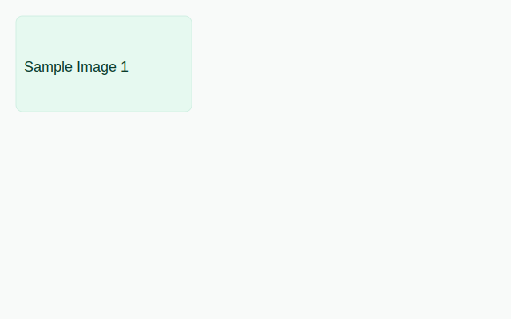
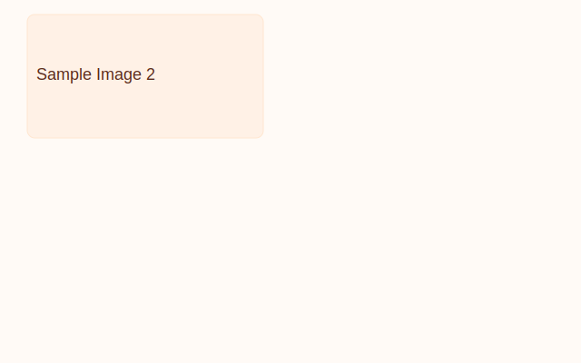
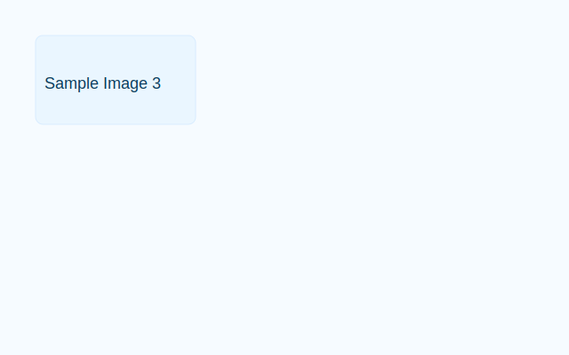

Find & Recover
With Ease
Experience effortless recovery with our dedicated lost and found service.



📞 Contact the SSG Office
Location: SSG Office, Main Building
Email: ssg@school.edu.ph
Office Hours: 8:00 AM – 4:30 PM (Monday–Friday)
Note: The SSG verifies all found and claimed items before release.